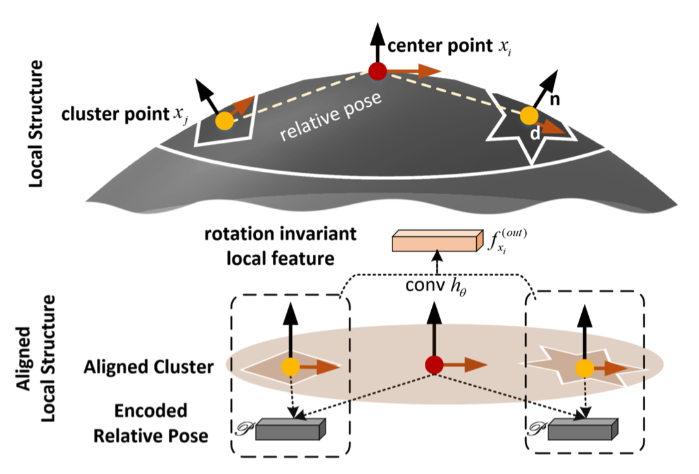
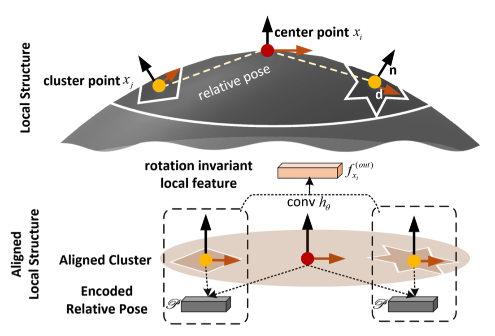

点云不变性表征
黄正跃，从业臻，金昕祺
由于采集设备的位置、姿态不同，真实采集到的点云数据在存在旋转、尺度多种变换，这种数据的变换为机器学习模型带来了不必要的困难，探索对空间变换不变的点云表征有重要意义。
图1 由于采集的角度、位置不同，真实数据中往往存在许多空间变换的干扰，例如左表示的尺度变换，右图表示的旋转变换。这些空间变换既存在于整体，又存在于局部，这为诸多具有层级局部特征提取结构的神经网络模型提出了巨大的挑战.
实现尺度不变的表征: PointNorm
现有方法多采用数据预处理（全局normalize）或者数据增强（data augmentation）的方式克服数据中可能存在的尺度变化问题。 数据增强是很暴力的方法，它潜在要求网络具有更大的容量和更多参数，这会为网络学习收敛带来新的困难。在数据预处理阶段对数据进行标准化是另一常用的方法，它在干净的单一对象上有较好的效果，但是会在诸多场景下失效（如下图左边所示）。考虑到全局归一化数据的困难，并且考虑到大多数网络都是类似CNN那样层级局部提取特征的，我们将大问题转化为小问题，将全局的问题转化为局部的问题, 提出了基于局部归一化，并保留关键相对尺度信息的PointNorm。
图2 局部点相比全局点更不容易受到噪音/不相关背景干扰，使用局部归一化能保证大多数物体上的局部结构被正确规正。基于这样的想法PointNorm 对局部点云进行归一化，并保留相对尺度信息，它适用于大多数基于层级局部窗口提取特征的网络。
实验结果
图3 PN表示PointNorm, 可以看到我们的方法使PointNet++ 和PointCNN达到了相当稳定的尺度不变的结果
图3 PN表示PointNorm, 可以看到我们的方法使PointNet++ 和PointCNN在不使用数据增强时达到比原始方法数据增强更好的效果
实现旋转不变的表征: PointAlign
采用类似的思路，将全局旋转规正的复杂问题转化为局部旋转规正的问题。点云的局部可以近似看作一个平面，因此可以考虑使用其法向量规正局部点云结构。
 

图4 PointAlign方法示意图
实验结果
图5 PointAlign 使方法在没有数据增强的情况下可能让现有方法达到稳定的旋转不变效果。
图6 ShapeNet Parts上带旋转后的数据分割可视化。